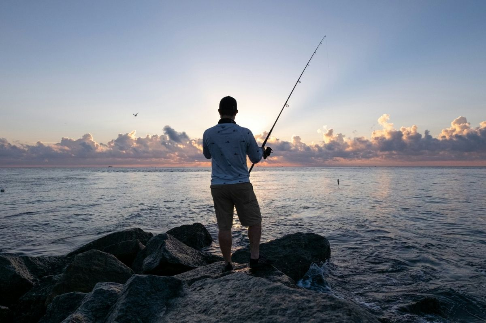
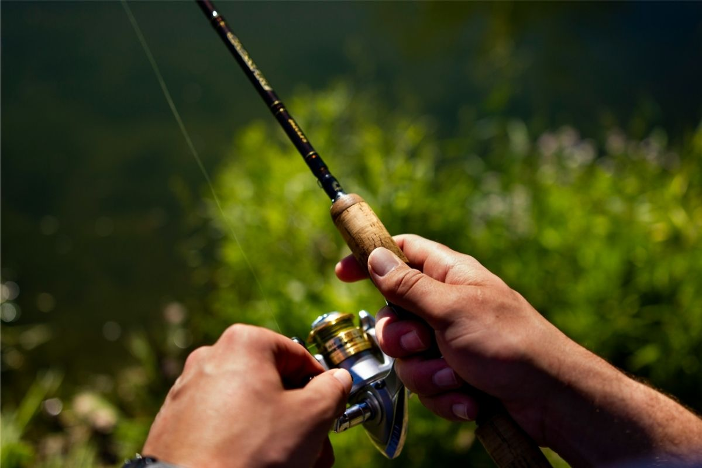
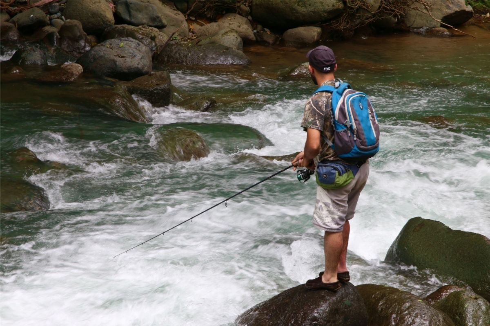

Aksiyon mühendisliği and kamış ucu sihirbazlığı. Yemlerine hayat ver and trofeleri cezbet kanka.
Doğru ekipmana sahip olmak yeterli değildir — onu nasıl kullandığın sonucu belirler. LRF'de başarı, sabır, gözlem and doğru tekniğin bir araya gelmesiyle gelir. Bu rehberde en temel teknikleri adım adım öğreneceksin.

LRF'de atış tekniği, hem mesafeyi hem de hassasiyeti doğrudan etkiler. Overhead (tepeden) atış en yaygın yöntemdir; ancak dar alanlarda side cast (yandan atış) daha pratiktir.

Maketi suya attıktan sonra nasıl çektiğin, balığın onu avlanmaya değer görüp görmeyeceğini belirler. Farklı çekiş teknikleri farklı balık türlerini ve koşulları hedefler.

LRF balıkları genellikle yapısal noktalarda — kayalıklar, iskeleler, rıhtımlar, yosunlu alanlar ve akıntı kırıkları — bulunur. Doğru noktayı bulmak, teknik kadar önemlidir.
LRF'de avlanan balıkların davranışlarını anlamak, doğru teknik ve maket seçimini kolaylaştırır. Su sıcaklığı, mevsim ve hava koşulları balık aktivitesini doğrudan etkiler.
Türkiye kıyılarında LRF ile en sık karşılaşılan türler.
LRF Akademi ile teorik bilgini derinleştir. Uzmanlık Rehberi ile trofe avcılığının sınırlarını zorla kanka.